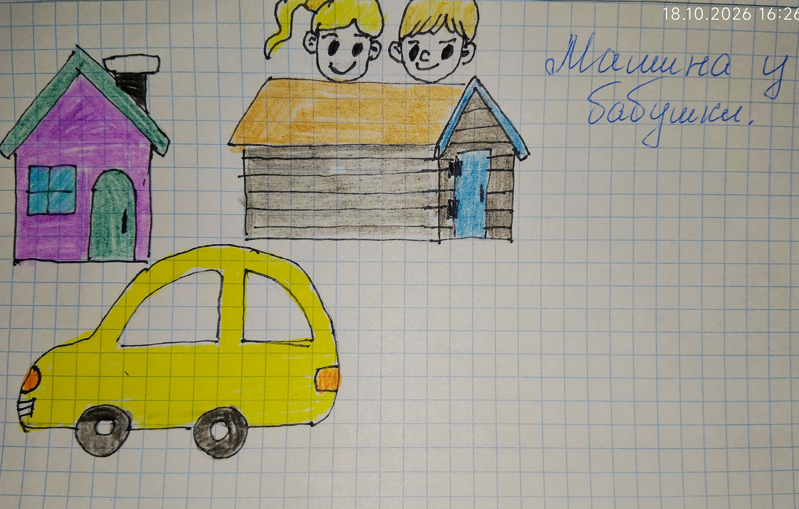

(Рисунок: Машина, дома и две головки из-за крыши)

Однажды к бабушке приехал дедушка — на обед. А мы с братом бегали на улице.
Машина стояла на пригорке. Мы, не подумав, облокотились на неё — и она поехала! Покатилась вниз и врезалась в дом.
Мы так испугались, что спрятались на крыше сарая. Сидели там и боялись, что нас будут ругать.
Как нас нашли — не помню. Но помню, что было страшно и смешно одновременно. 🤣